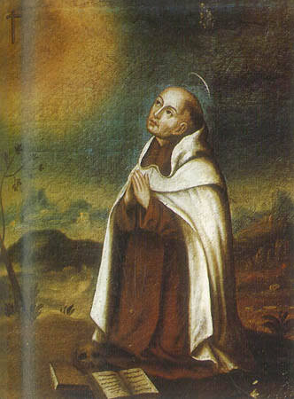

†Hola, Sophi.
Si estás leyendo esto, probablemente sientes que Dios está lejos de ti.
Antes de continuar quiero decirte algo.
Este es quizá el único encuentro de toda la página sobre el que no puedo hablar desde mi propia experiencia. Llevo alrededor de dos años recorriendo el camino hacia la fe católica. Antes fui evangélico. Siempre fui creyente y, siendo sincero, nunca sentí que Dios estuviera lejos de mí.
Lo más parecido que experimenté fue algo distinto: sentir que mis acciones iban en dirección contraria a la voluntad de Dios.
Eso podría representarse como una persona corriendo en dirección opuesta... Pero Dios no es un punto fijo del que uno pueda alejarse caminando. Él está presente sosteniendo nuestra existencia a cada instante.
Por eso no quiero hablarte de algo que nunca viví. Prefiero hacer algo mejor.
Quiero dejar que te hablen quienes caminaron por esa noche mucho antes que nosotros.
Muchas veces la vida cristiana consiste en decidir a quién creerle: a nuestros sentimientos... o a Cristo.
El corazón dice
«Estoy sola.»
Cristo dice
«Yo estoy con ustedes todos los días hasta el fin del mundo.»
Mateo 28, 20El corazón dice
«Dios me abandonó.»
Cristo dice
«No te dejaré huérfana.»
Juan 14, 18El corazón dice
«Nada tiene sentido.»
Dios responde
«Mis pensamientos no son tus pensamientos.»
Isaías 55, 8La fe no es un sentimiento. Los sentimientos no son constantes.
En cambio, la fe es un don dado por Dios que consiste en la capacidad de decidir creer en las cosas que Él nos prometió.
Estaban ahí todo el tiempo.
Dios tampoco se fue.
Hace más de cuatro siglos vivió un fraile español llamado Juan de la Cruz.
Fue encarcelado.
Pasó meses en una celda diminuta.
Sufrió hambre.
Humillaciones.
Oscuridad.
Y precisamente allí escribió algunas de las páginas más profundas sobre la vida espiritual.
Toledo, 1577
Hay un malentendido muy común sobre lo que San Juan llamó Noche Oscura del Alma. No es simplemente sentirse triste, o sentir que Dios está lejos.
En San Juan es algo más profundo: una purificación por la que Dios despega al alma de los consuelos sensibles para unirla más plenamente a Él. No todas las sequedades espirituales son esa experiencia en el sentido estricto que él describe.
Pero sí descubrió algo que nos sirve a todos:
A veces Dios no guarda silencio para alejarnos. A veces guarda silencio para enseñarnos a amarlo por Él mismo. No por los consuelos que puede darnos.
Noche Oscura del Alma
Escúchalo recitado
Quizá hoy no entiendes lo que Dios está haciendo.
Quizá yo tampoco lo entendería si estuviera en tu lugar.
Pero si un santo que atravesó esa oscuridad desde una celda pudo seguir confiando...
quizá nosotros también podamos hacerlo.
«Dios conduce muchas veces al alma por caminos que ella no comprende para llevarla a una unión más profunda con Él.»
San Juan de la CruzSi alguna vez sientes que Dios está lejos...
entra a una iglesia.
Siéntate frente al Sagrario.
Y aunque no sientas absolutamente nada...
quédate.
Porque la verdad no cambia con nuestros sentimientos.
Él está ahí.
Oremos
†
En la oscuridad
Señor,
no siempre te siento.
A veces el silencio pesa.
A veces la oscuridad no cede.
Pero tú dijiste que estarías.
Y elijo creer lo que dijiste
sobre lo que siento.
Quédate conmigo
aunque no pueda sentirte.
Amén.
Cinco minutos.
Nada más.
Quédate con Él.